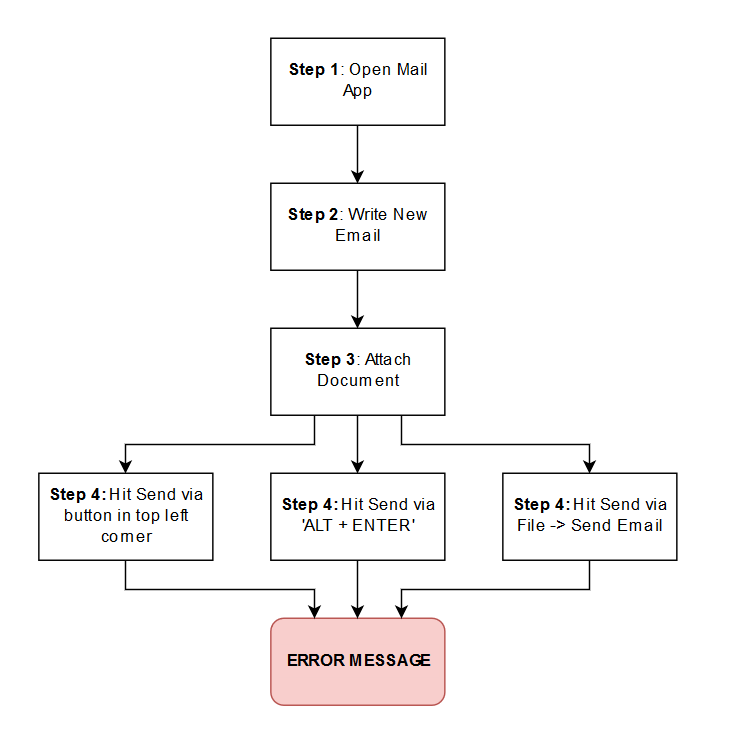
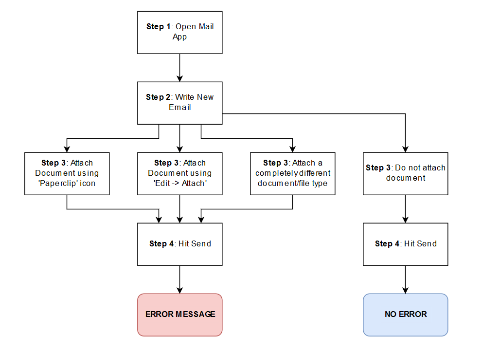
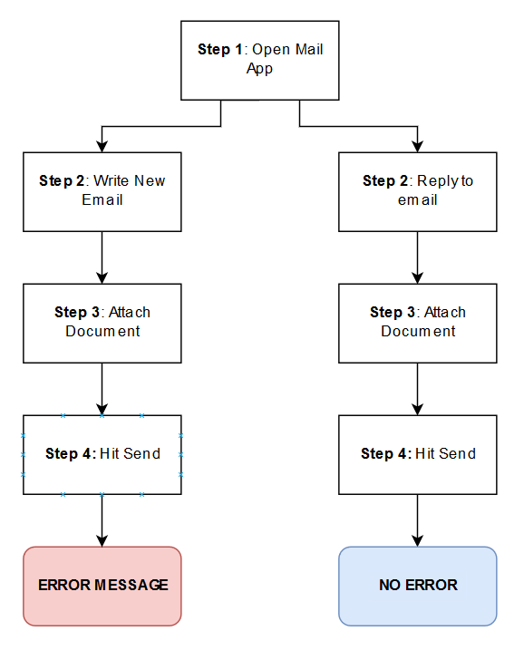

The Art Of Troubleshooting
How To Efficiently Raise Support Requests
Many have written articles, even books, on how to solve problems. As human beings, we are built for it, and whether we realise it or not, do it every day. However, in the world of technology, people often look to the local IT ‘wizards’ to help them overcome issues that are plaguing their workflow.
In this article, I will attempt to break down the steps and thought processes that engineers seem to repeat so instinctually. My hope is that somebody who is not technically minded can use this guide to, at best, solve, and at worst, partially diagnose the issue at hand, in order to remove barriers to their workflow, or even remove the need for support entirely. It helps to raise support requests more efficiently and make the life of IT support departments that little bit easier.
While the examples used will be based on technical issues that are faced on an almost daily basis, they should be applicable to various other areas of business and even everyday life. It’s easy to get caught in a spin when things aren’t working as expected, but by taking a step back and approaching things methodically, we should be able to lessen the stress we cause ourselves, and better understand the tools and processes we work with.
When we go to A&E, we are usually seen in triage before being directed toward the relevant doctor or ward. This is to ascertain the severity and general nature of the problem at hand. We often self diagnose before we’ve even seen a professional, and depending on where we sit in the hypochondriac spectrum, we might work ourselves up about nothing, or underestimate the impact of the issue. We don’t all have medical training, so we can’t all be expected to understand exactly what is happening, but the way we communicate the symptoms is the key to reaching a logical conclusion quickly.
Tip 0: Turn it off and on again
It might sound clichéd, but if you can get away with doing this without losing any work, do it. We are not joking when we say it fixes a large majority of problems reported. Seriously, give it a shot.
Tip 1: Learn the difference between symptom and impact
Before you raise a support request, it’s important to communicate the symptoms and the impact of those very clearly, and separately.
The symptoms are the direct, measurable effects on the system. These are helpful in the troubleshooting process, and should be outlined in purely logical and objective ways where possible.
The impacts are the indirect results of the symptoms being apparent. These are helpful in measuring the severity of the request. They should be explained in terms of impact to day to day activities and workflow.
Both are equally important to clarify. Stating in a request ‘my email is not working and we have an important tax deadline to hit in one hour’ clearly explains that the problem needs to be fixed quickly, but not what the nature of the problem is exactly. On the other hand, ‘when I click the reply button, I receive an error message as per the attached screenshot’ describes the symptoms of the problem quite well, but not how severely it should be treated. This can result in the issue been marked at a low priority when in reality, it could be life or death for your department.
It’s very important, and respectful, to remember that your ticket is one amongst many. Without the priority being clearly indicated at a glance, the support team will not know where to place you in their (likely very long) to-do list. It’s is your responsibility to communicate clearly with them as much as it is theirs to respond appropriately. That being said, do not mark your tickets as high priority unless they are business critical. If you have clearly outlined the impact of the issue in your request, the engineers should be able to prioritise appropriately.
When writing your support request, be as detailed as possible; this will often ensure you are seen more quickly and receive a better quality of service. One way to lay it out is as follows:
Symptoms of the problem and how to replicate:
Step 1: Open Software Package
Step 2: Press New Email
Step 3: Click Attach Button
Step 4: Select Document.PDF and click ‘Accept’
Error Appears Here (Screenshot Attached)
Impacts of the problem and areas of work/business affected:
E.g. “I must send this PDF file out within the hour to hit important tax deadline, missing this deadline will result in fines.”
This layout is straight to the point, can be read over by a support professional quickly, and means that they can quickly test the process from their end before coming to see you with a clear idea of what might be causing the issue.
Note that by including the process step by step and the particular files and programs used, it makes it much simpler to ascertain whether the issue is localised to your computer, related to the document/software itself, or more generalised to the infrastructure or software in question. More on this in the next section.
Tip 2: Self triage by process of elimination
General troubleshooting might seem complicated and technical, but is really a simple process of elimination. The fix might require more technical know-how, but finding out where the problem actually exists is a skill that anyone can learn. This might seem slightly tedious at first, and you might say ‘that’s not what I’m paid to do’, but think about it like this:
You go to A&E because of a severe pain in your chest.
- Saying: “I have a severe pain in my chest” doesn’t give the medical professional much to go on; they are left asking all of the questions and running countless tests on you. You’re left in pain for longer, and it takes up more of everyone’s time.
- More than likely, you’ve noticed some patterns in the pain. It might be that it only hurts in the mornings, and only when you’ve slept on your left side, maybe it only hurts when you twist at the hip. You know this because you’ve made an effort to try different approaches, primarily to rid yourself of it, but also partly to understand the nature of it more clearly. Reporting this information to your doctor hugely improves your odds of appropriate treatment and reduces the time you’ll be suffering.
The same steps would apply to something like a sprained ankle; you move and twist it in different ways, apply pressure from different angles, to see what hurts and what doesn’t.
If you come across a technical problem, go back to the beginning, and see if you can cause it to happen again in the same way. This is called replicating the issue. Being able to lay out detailed steps of how the problem was encountered is invaluable information in the reporting process. Computers are logical machines, and most (but not all) patterns of behaviour are predictable once identified.
As soon as you are able to intentionally create the problem repeatedly, it’s time to carry out some initial diagnostics. To do this, you should write down each step, and establish whether there is an alternative way to reach the next one. You’ll find this is more common than you expect, and just requires you to look at each action you take in a bit more detail.
For example, here is a generalist approach to outlining replication steps:
- Step 1: Open Mail App.
- Step 2: Write new email.
- Step 3: Attach document.
- Step 4: Hit Send.
- Step 5: Receive Error Message.
Sending something like this to your support team not only limits how much information they have to work with, but requires them to take over your machine and waste more of your time, as well as everybody else who is waiting for support. To help optimize the support service company-wide, you could do a bit of expansion at each stage in the process. Think about how you do each step and how you could do it differently. Try the alternative approaches and see if the result varies. You should always work in reverse from the point the issue appears.
Troubleshooting Breakdown
In our example, the error appears at Step 4, after we ‘Hit Send’. So let’s see if there are some alternative approaches that you can try, followed by logging the result of each attempt.

At this point, we might not be able to think of another way to change this step. We therefore suspect that the ‘Send’ step is not at fault, so we go back again to Step 3:

We have now ruled out the ‘attach process’ being at fault, and we also know the document is not at fault, as it happens with others too. We know that it only affects emails with an attachment, and not those without. We might find there are other steps here, such as changing recipients, emailing external mailboxes instead of internal organizational ones etc. but let us move on to Step 2:

Eureka! We have managed to bypass the issue. Whilst this isn’t a resolution by any stretch, by carrying out these logical steps, you have done some triage for the support team, and given them a signpost of where they should look for the problem. Thanks to a few minutes of your time, the engineers now know that the issue is only applicable to New Emails with Attachments and not with replies. You could even go as far as to ask a colleague to repeat the same steps and report whether they receive the issue as well. This will be a huge help to the engineer, particularly if they need to travel to your office/desk to carry out further diagnostics. You may have saved them a visit entirely, and allowed them to get stuck straight into finding the solution.
You would report it as simply as:
Symptom:
- New Emails with Attachments not sending. Error Message Attached.
- The problem does not appear when the attachment is removed.
- The problem does not appear when a reply with attachment is being sent.
- The issue remains regardless of what file is attached.
- This happens on my colleagues desktop as well as my own.
Impact:
“We have urgent documents to send out by 7:00pm today. Using the reply workaround is not possible in this instance.”
This is thoughtfully laid out and provides all of the initial information the support team may need. Not only will they will see this and respond to you much more quickly, but it will free up their time to find a solution without spending time eliminating variables that are irrelevant.
These steps might seem long and arduous, but in reality, it’s just a few minutes of your time. As the person reporting the problem or bug, you are in the best position to triage it first hand. It makes life easier for everyone around you, and it’s always good to be on the good side of your support team…
Tip 3: Don’t Jump To Conclusions
Very frequently, somebody will report a problem with a false diagnosis attached. This can be unintentionally misleading to the person answering the call. Take on the mindset that the source of the problem might not be immediately apparent.
Follow Tip 2, even if it’s at a basic high level, and don’t diagnose unless you’re 100% certain you know what is at fault.
For example, you might report: “My mouse is broken”.
In response, a new mouse might be sent out to you and the ticket is closed. You plug it into your laptop an hour later, and frustratingly, it’s still not working! You get angry at the support team for not coming to see you and giving you the resolution that you desperately need. By taking a step back before you report, and trying a different mouse (maybe a colleague’s) or the trackpad, you may have realised much sooner that the trackpad works, and it’s in fact the physical USB ports that are at fault. Not only does this prompt the engineer to respond appropriately, but it also means you’ve found a workaround so that you can continue working in the interim.
The same applies in almost every technical situation.
You might find that “Outlook isn’t working” should have been “My WiFi is down” - again, a little bit of critical thinking could have helped identify this before you fruitlessly followed the Step by Step instructions you were sent on how to reset Outlook. “My screen is broken” might be “My docking station has lost power” etc. You wouldn’t go to a doctor and say “I’ve broken my leg” - you might say, “I suspect I’ve broken my leg, due to symptoms X and Y”.
It’s easy to get into a panic when something isn’t working as you expect, but pause for a moment, and you may find things aren’t as bad as they seem.
The Support Process
After you’ve broken down the symptoms and impact of your problem, you will probably need to raise a ticket via whatever support process your organisation employs. There is generally an unspoken etiquette in approaching the service desk teams, but learning the best approach will often result in a faster and more helpful response.
Most support teams have SLA (Service Level Agreements) in place. These give a timescale on initial response and ticket closure deadlines, the metrics of which are later used to improve the team’s performance when reviewed. It’s important to remember that your service desk is likely to have a long list of requests to work through, so by understanding their process, you can do your part to help them get through it more quickly.
Walk-Ins
If the service desk is physically nearby, it’s tempting to just walk in, get somebody’s attention, and try and get an immediate response. Depending on the policy, they may turn you away and ask you to raise a ticket through the official channel (be it email or a portal), they might raise a ticket on the spot for you, or if you’re lucky, they’ll come and help you immediately. Try not to feel offended if you are turned away, as you may not be aware of just how busy they are. They also have policies in place, and completing tasks without following the process can reflect poorly on the individuals and their management. Factors such as the severity of the problem and how snowed under they are contribute to how the team will respond, but you should try to avoid turning up at the door if things can wait. What feels frustrating and urgent to you in the moment, might not be as pressing as some of the other tickets that are currently being dealt with. Walking in can cause distractions to support staff working through complex issues, so it is best to avoid doing so unless you’re certain it’s a 30 second fix (e.g. “Can you quickly pass me an ink cartridge/new keyboard please?”) or the matter is business critical.
Telephone
Some service desks will have a queuing system, others will have direct lines. If you urgently need a problem fixed, it is usually acceptable to call the service desk directly and explain the severity. However, the best practise here is to raise a ticket first, and then call to alert the team that you have raised a ticket with all the relevant information. This gives the engineer time to read and process the details, as well as remaining compliant with service desk procedures and SLAs. If your ticket can wait, just raise a ticket - a call is not usually warranted, even if you feel it’ll get things sorted more quickly. Some organisations do prefer direct phone calls over written communication, so if you’re unsure, ask them, or your management, what the best course of action is.
Tickets
Most service desks will read tickets almost immediately as they arrive for processing. If it is seen as urgent, it’ll be marked as high priority and bumped up the list accordingly. Just because you’re not getting a reply straight away, it doesn’t mean you have been forgotten about or are being treated unfairly. Again, most support teams have back to back tickets to deal with and will make a fair judgement on where your ticket should be in that queue. Most good platforms for ticket management will have automated response systems, letting you know when a ticket has been raised with a reference number. If the problem is not stopping you from doing your job, you should wait until an engineer gets in touch (don’t forget to include contact details where necessary), but a follow up phone call might be warranted if you genuinely suspect your request has slipped the net.
To Conclude
As somebody who has been on both sides of the fence, both raising and resolving tickets, I can attest to the frustration that can come with it. As support personnel, each ticket is usually completely different to the last, and whilst we have the capacity to understand the technology and troubleshooting methodologies, we are still learning things every day. We don’t know everything, and sometimes we do have to stop and read up on things before we can provide an adequate solution. Technology is imperative to the modern workplace, but with such complexity, things are bound to break - a good service desk is a key component in holding it all together. By taking a bit of time to try and understand the thought processes the engineers go through, we can all do our part to make life just that little bit easier for them and for ourselves. Doing so gives us all a better user experience in the long run, and gives us the space to implement new and exciting solutions that can help transform our working lives.